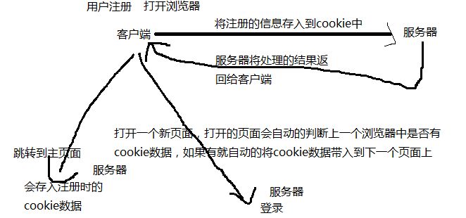

梳理知识点
正则 ： 校验表单数据
正则操作方法
replace() match() search() 字符串的方法
test() exec()
表单验证
cookie
什么是cookie ？
就是 会话跟踪技术
会话 ： 从 浏览网站开始 到 结束的这个过程 称为一次会话 浏览器关闭 表示会话结束
会话跟踪技术 ： 客户端向服务器端请求数据，多次请求时，实现数据共享的过程，称为会话跟踪技术.

客户端 ： 为用户提供浏览器网址的一台电脑
服务器 ： 安装了某种服务软件
cookie如何存取
document.cookie 取cookie
document.cookie = "键=值" 键 的名称 可以按照标识符的命名规范 值 是一个字符串
字符串和对象之间类型转换
向cookie中存储数据时 必须存字符串
将字符串转成对象 ： JSON.parse() '{"uname":"lichune"}' '[{},{},{}]'
将对象转成字符串 ： JSON.stringify() [] {}
cookie的生存期
生存期 ： cookie数据在浏览器中保存的时间
如果不设置生存期，浏览器关闭，表示会话结束，cookie数据 自动删除
如果设置生存期 ， 浏览器关闭，cookie数据保存在浏览器上 ，生存期内cookie不会自动删除
如何设置生存期？？ 需要 expires 参数
document.cookie = "键=值;expires=过期时间" 过期时间格式 ： 要求标准时间格式
删除cookie
将某个键的值 设置为 "" 或 将生存期设置为 -1
5、使用cookie需要注意
1、cookie存储的数据安全性低
2、cookie 存储数据量小 最多存4kb数据 一般不能超过50个cookie
3、cookie不能跨文件夹访问 在a目录下存储的cookie 在b目录下不能访问到a中的cookie数据
cookie参数 ：
键 必须
值 必须
document.cookie = "键=值;expires="+生存期
封装cookie